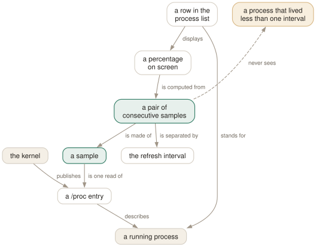

Day 01
The sampling model
htop is a sampler, not a monitor — and that explains every number on the screen.
By the end of today you can
- say where every number on the screen came from, and how stale it is
- set the refresh interval deliberately, and name the two values htop silently clamps it to
- read a process at 780% CPU on an idle-looking machine without being surprised
A stopwatch, not a microscope
htop does not watch your machine. It wakes up on a timer, reads a pile of text files under /proc, subtracts the last reading from this one, and paints the difference. Every surprising thing htop ever does to you follows from that, so it is worth ten minutes before you learn a single key.
The kernel does not maintain a live feed of process activity. It maintains counters — this process has accumulated so many clock ticks of user time, so many of system time, its resident set is currently so many pages — and exposes them as files under /proc/[pid]/. Those counters only ever go up. They have no notion of “percent”.
So htop manufactures the percentages. It reads the counters, waits delay tenths of a second, reads them again, and divides the difference by the time that passed. CPU% is not a property of a process that htop looked up; it is a rate that htop computed between two photographs.

/proc, separated by the refresh interval — 1.5 seconds unless you have said otherwise. Follow the dashed aspect: a process that lives and dies inside one interval never becomes a row, however much CPU it burned. That single gap explains most of the times htop seems to be lying to you.Three regions, and they do not share a source
Everything on screen belongs to exactly one of three bands. Name the band before you read the number.
- the header meters
- The bars and readouts at the top. Built from machine-wide cumulative counters —
/proc/stat,/proc/meminfo,/proc/loadavg. They account for all work, including work done by processes that have since exited. Day 8 takes them apart. - the process list
- One row per process that existed when htop last looked. Built from
/proc/[pid]/. It can only describe processes that were alive at sampling time. Days 2 and 3 are spent here. - the function bar
- The last line. Not decoration — it is the live state of the interface. The labels change to tell you what mode you are in, which is the fastest way to answer “why is htop behaving oddly”.
0[ 0.0%] 8[|| 9.1%] 16[ 0.0%] 24[ 0.0%]
1[ 0.0%] 9[|| 10.0%] 17[ 0.0%] 25[ 0.0%]
Mem[||||||||||||||||||||9.48G/61.9G] Tasks: 219, 2342 thr, 429 kthr
Swp[ 0K/8.00G] Load average: 0.19 0.22 0.35
Uptime: 03:16:22
PID USER PRI NI VIRT RES PRIV S CPU%▽MEM% TIME+ Command
70337 jhrcek 20 0 234M 10428 6160 R 81.3 0.0 0:00.17 htop
5399 jhrcek 20 0 12.6G 345M 163M S 10.2 0.5 1:54.73 gnome-shell
1 root 20 0 40080 22080 10516 S 0.0 0.0 0:02.64 systemd
F1Help F2Setup F3SearchF4FilterF5Tree F6SortByF7Nice -F8Nice +F9Kill F10Quit
The clock you are allowed to set
The interval is delay, measured in tenths of a second, and it defaults to 15 — one and a half seconds. The manual page never states that default; it comes out of the config file htop writes for itself.
$ htop -d 5 # half a second: twitchy, good for catching bursts
$ htop -d 30 # three seconds: calm, good for leaving on a screen
$ htop -d 0 # accepted in silence, and clamped to 1
$ htop -d 500 # accepted in silence, and clamped to 100
The clamp is the documented range 1–100, so the slowest htop you can ask for is one sample every ten seconds and the fastest is ten a second. Values outside it are not errors; they are quietly corrected, which is a pattern you will meet again on Day 9 when you write a config file by hand.
Why the percentages do not add up
On a multi-core machine CPU% is a share of a single core. A process using four cores flat out reads 400.0, and on a 32-core box the column tops out at 3200. top(1) calls this Irix mode and htop inherits both the behaviour and the name.
The alternative lives one column away. PERCENT_NORM_CPU — NCPU% on screen — divides by the number of cores, so the same process reads 12.5% of the whole machine. Day 10 shows how to put it on screen; today it is enough to know which question each column answers:
CPU%(PERCENT_CPU)- How hard is this process working? 100% means one core saturated.
NCPU%(PERCENT_NORM_CPU)- How much of this machine is this process? 100% means the whole box.
Pausing, redrawing and leaving
Z stops the sampling loop. The screen freezes so you can read a row that keeps moving, and the machine carries on entirely unaffected. Press it again and the counters catch up in one jump, because they were accumulating the whole time.
Ctrl-L forces an immediate redraw and recalculation without waiting for the tick. Reach for it after something else has scribbled on your terminal, or when you cannot bear to wait 1.5 seconds.
Today's habit
Put htop somewhere you will see it — a spare tmux window, a second monitor, a terminal tab you never close — and start glancing at it when a machine feels slow rather than when it has already fallen over. Reading htop calmly is a skill, and a crisis is a poor place to practise it.
Tomorrow: the process list itself — what the twelve default columns are, and how to move around in a list ten times taller than your screen.
New vocabulary
Keys
| Key | Does |
|---|---|
| Ctrl-L | Redraw the screen and recalculate, without waiting for the next tick. |
| Z | Pause and resume sampling. The screen freezes; the machine does not. |
| F10q | Quit. This is also the only exit that saves your settings. |
Commands
| Command | Does |
|---|---|
htop | Start htop, reading ~/.config/htop/htoprc once at startup. |
htop -d 10 | Sample every 10 tenths of a second. Clamped to the range 1–100. |
htop -n 5 | Draw five frames, then exit on its own. Absent from the manual page. |
htop -V | Print the version. The -v in the SYNOPSIS does not exist. |
Options
| Option | Does |
|---|---|
delay | Tenths of a second between samples in htoprc. Default 15, i.e. 1.5 s. |
Drillsdo these in a real terminal, today
Self-check
Answer out loud first, then unfold.
You run a build that spawns hundreds of short-lived compiler processes. The machine is clearly working hard, the header CPU meters are pinned — yet the process list looks almost empty and nothing in it has a high CPU%. Where did the work go?
Into processes that were born and died between two samples. At the default 1.5 s a process that lives for 80 ms is simply never observed, so it never gets a row. The list can only show you what existed at the instant htop looked.
The header meters disagree because they have a different source. They are built from the kernel's cumulative counters, which count every tick of CPU time whether or not the process that spent it still exists. So the meters see the whole build and the list sees almost none of it. When those two disagree, believe the meters and suspect process churn.
htop shows one process at 780% CPU while the header meters are mostly idle bars. Is the number wrong?
No. PERCENT_CPU is a share of one core, so on a 32-core box it runs from 0 to 3200. 780% is 7.8 cores busy — genuinely a lot of work, and genuinely about a quarter of this machine. The manual page calls this Irix mode, after top(1).
The other convention is on the same screen if you want it: add the PERCENT_NORM_CPU column (NCPU%) and htop divides by the core count, so the same process reads 24.4%. Neither is more honest; they answer different questions, and the mistake is only ever reading one as if it were the other.
You run htop -d 0 expecting a complaint and get none. What are you actually running at, and why might you regret it next week?
At delay=1 — one tenth of a second. htop clamps silently: anything below 1 becomes 1, anything above 100 becomes 100, and negative numbers become 1 as well. You get no message either way.
The regret is that -d is not a one-off override. If you change any setting during that session and then quit cleanly, htop writes delay=1 into your htoprc, and every htop you start afterwards samples ten times a second until you notice. Day 9 covers how to stop htop editing your config behind you.
The manual page's SYNOPSIS reads htop [-dCFhpustvH], yet htop -v answers “invalid option”. What should you conclude?
That the SYNOPSIS is stale, and that it is the wrong thing to trust. The version flag is -V. The same line also omits -n, -M, -U, --readonly, --no-meters and --no-function-bar, all of which the binary accepts.
The habit worth forming today: when the page and --help disagree about a flag, the binary settles it, and it takes ten seconds to ask. This course was written that way throughout — Day 14 collects every place the two diverge.
Cheat sheet
htop # three regions: header meters / process list / function bar
# samples /proc every `delay` tenths of a second; default 15
htop -d 5 # half-second sampling (clamped to 1..100, silently)
htop -n 1 # draw one frame and exit (undocumented in man htop)
htop -V # version. `-v` from the SYNOPSIS does not exist
Z # pause/resume sampling; the machine keeps running
Ctrl-L # redraw and recalculate now
q F10 # quit -- the ONLY exit that saves settings
CPU% = share of ONE core -> 780% means 7.8 cores busy
NCPU% = share of the MACHINE -> the same process, divided by core count
The header meters and the process list do not share a source. Meters come from machine-wide cumulative counters and count work done by processes that have already exited; rows come from /proc/[pid]/ and can only show what was alive at sampling time. When they disagree, suspect short-lived processes.
Everything through Day 01
Keys
| Key | Does |
|---|---|
| Ctrl-L | Redraw the screen and recalculate, without waiting for the next tick. |
| Z | Pause and resume sampling. The screen freezes; the machine does not. |
| F10q | Quit. This is also the only exit that saves your settings. |
Commands
| Command | Does |
|---|---|
htop | Start htop, reading ~/.config/htop/htoprc once at startup. |
htop -d 10 | Sample every 10 tenths of a second. Clamped to the range 1–100. |
htop -n 5 | Draw five frames, then exit on its own. Absent from the manual page. |
htop -V | Print the version. The -v in the SYNOPSIS does not exist. |
Options
| Option | Does |
|---|---|
delay | Tenths of a second between samples in htoprc. Default 15, i.e. 1.5 s. |